Dermatose por IgA linear
38 imagens clínicas · toque para ampliar


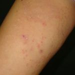

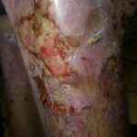

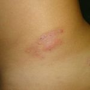

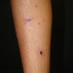


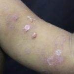

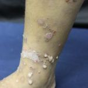


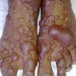

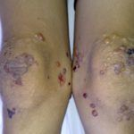


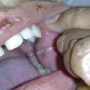

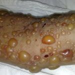


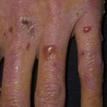

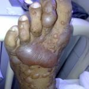

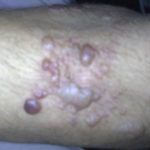

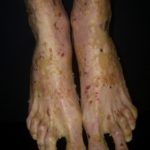

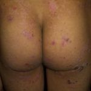

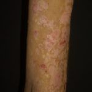

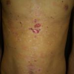

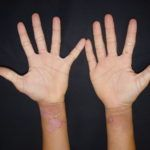


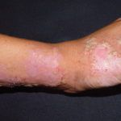


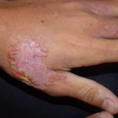

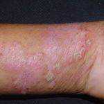

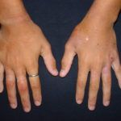

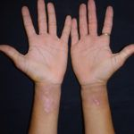

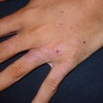

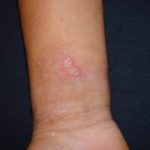
Texto da doença
Epidemiologia, quadro clínico, diagnóstico e tratamento de Dermatose por IgA linear, e como a Skin Prime pode ajudar.
Imagens clínicas de caráter educativo. Não substituem a avaliação de um dermatologista.